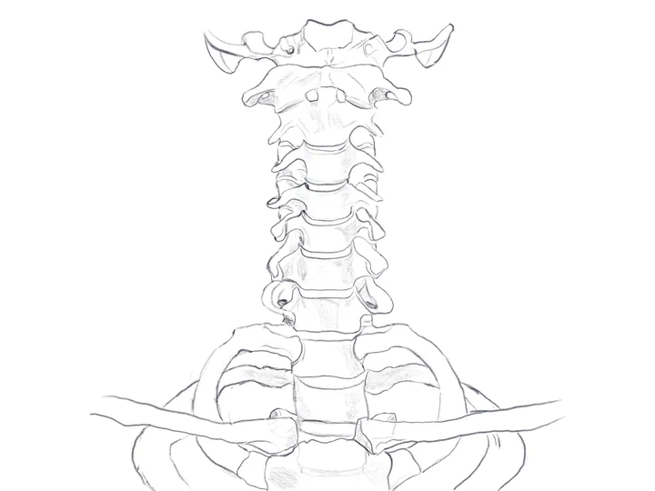

Aims for this region 5
- Identify individual bones which make up the skullCovered
- To understand the articulations of the bones of the skullCovered
- Have an understanding of the development of the maxilla and mandible
- Begin to identify structures, foramina and structures traversing them, on the face and base of skull, with particular attention to the mandible and maxilla
- To understand the layout of the vertebral column, with specific reference to the cervical regionCovered
Bones of the cranium and face #
The human skull consists of 28 bones:
- 8 cranial
- 14 facial
- 6 auditory (ossicles)
The hyoid bone is sometimes counted, bringing that number up to 29.
These bones are split into cranial (neurocranium) and facial (viscerocranium) bones which protect the brain and form the face respecively.
Sources Author's notes
Cranial Bones #
There are 8 crainal bones that form the cranial vault. These bones surround the brain and its meninges, housing vital blood vessels and neural structures. They are summarized below in the following table:
| bone | paired status |
|---|---|
| Frontal | Single |
| Temporal | Paired |
| Parietal | Paired |
| Occipital | Single |
| Ethmoid | Single |
| Sphenoid | Single |
Sources Author's notes
Facial Bones #
The facial bones form the supporting structures and origins of attachments for muscles of facial expression, mastication, and house vital nerves, arteries and vessels. They are summarized below in the following table:
| bone | Paired status |
|---|---|
| Maxilla | Paired |
| Zygomatic | Paired |
| Lacrimal | Paired |
| Nasal | Paired |
| Inferior nasal concha | Paired |
| Palatine | Paired |
| Mandible | Single |
| Vomer | Single |
Sources Author's notes
Sutures and joints of the skull #
The majority of the joints found in the skull are fibrous joints (synarthroses) or sutures that allow very little movement, providing structural support and protection for the brain and associated vital structures.
Other joints of the skull include:
Diarthroses:
- The mandible’s articulation with the temporal bone (Temporomandibular joint - TMJ), a special ginglymoarthroidal joint.
- The joints linking the ossicles (Malleoincuidal joint, incudostapedial joint) which are diarthroses (synovial in nature)
Gomphoses:
- The anchors which fix the roots of the teeth into their sockets in the maxilla and mandible
Sources Author's notes
Layout of the vertebral column #
The vertebral column is the central axis of the skeleton. It supports the skull, encloses and protects the spinal cord, and is flexible because it is built from many small joints set close together. It has five regions: cervical, thoracic, lumbar, sacral and coccygeal.
Sources Last's, Ch. 6, Part 18 (Vertebral column)
Curvatures #
In the fetus the whole column is flexed into a single C, concave forwards. This is the primary curvature, and it is kept for life in the thoracic, sacral and coccygeal regions. After birth the column extends, and this produces the secondary curvatures, convex forwards (lordosis), in the cervical and lumbar regions. The cervical curve is associated with the muscular support of the head. The bends give the column some resilience, but the intervertebral discs are what absorb shock.
Sources Last's, Ch. 6, Part 18 (Vertebral column)
What makes a vertebra cervical #
Every vertebra has a body in front and a neural arch behind, and the two enclose the vertebral foramen. The arch carries a spinous process in the midline and a transverse process on each side. The part of the arch between the spine and the transverse process is the lamina, and the part between the transverse process and the body is the pedicle. The articular processes arise where lamina and pedicle meet.
Two features separate the regions. A cervical vertebra has a foramen in its transverse process and no costal facets. A thoracic vertebra has costal facets on the side of the body. A lumbar vertebra has neither.
The foramen has a developmental explanation. Costal elements (the rib components) form beside every vertebra, but outside the thorax they are small and fuse with the neural arch. In the neck this fusion encloses the foramen transversarium.
Cervical bodies are small and delicate because they carry less weight than those below. Their vertebral foramen is large, because it has to hold the cervical enlargement of the spinal cord.
Sources Last's, Ch. 6, Part 18 (General features of vertebrae); Cunningham, ch. 2, p. 5
Joints between vertebrae #
Two kinds of joint link adjacent vertebrae, and they behave very differently.
- Between the bodies: the intervertebral disc, with the anterior and posterior longitudinal ligaments. A disc is a secondary cartilaginous joint. Its outer annulus fibrosus is made of concentric layers whose fibres cross at right angles in alternate layers, which lets it resist strain in any direction. Inside it lies the nucleus pulposus, a remnant of the notochord.
- Between the arches: the zygapophyseal (facet) joints, which are synovial. The direction of the facets decides which movements a region allows. The pedicles are not joined, which leaves the intervertebral foramen for the spinal nerve.
In C3 to C7 the upturned posterolateral lip of the body (the uncus) can form a small cleft against the vertebra above. This is called the uncovertebral (Luschka) joint. Whether it is a true synovial joint or a degenerative change in the adjacent disc is disputed.
Sources Last's, Ch. 6, Part 18 (Vertebral joints, under Joints between the bodies and Joints between the arches)
Movement in the cervical region #
The atlanto-occipital and atlantoaxial joints are specialised for nodding and for rotating the head, and are described below. In the rest of the neck the upper facets face backwards and upwards, and the lower facets face forwards and downwards. Flexion and extension are free, but pure rotation is impossible. Lateral flexion is always accompanied by a little rotation: on the side of the concavity the arch of the vertebra slides down and back, and on the convex side it slides up and forward.
Sources Last's, Ch. 6, Part 18 (Movements of the vertebral column: Cervical region)
The typical cervical vertebra (C3 to C6) #
The third to sixth cervical vertebrae are typical. The first and second are modified to let the head move on the neck, and the seventh has some features of a thoracic vertebra.
Sources Cunningham, ch. 2, p. 5
Body #
The body is oval, with its long axis running from side to side. Its upper surface is concave from side to side, and its lateral margins turn up into the posterolateral lips (unci) described above. These fit against bevelled inferolateral margins on the body above. The front of the body is concave from above downwards.
Sources Cunningham, ch. 2, pp. 5–6; Last's, Ch. 6, Part 19 (A typical cervical vertebra)
Neural arch and articular facets #
The pedicles are short and pass backwards and laterally. The laminae are long and rectangular, and in extension they nearly overlap the laminae of the vertebrae next to them. The spine is short and usually bifid. The vertebral foramen is large and triangular.
The articular processes are short bars at the junction of pedicle and lamina. Their facets are cut obliquely. The superior facets face up and back, and the inferior facets face down and forward. This is the arrangement that allows the free flexion and extension, and the coupled lateral flexion and rotation, described above.
Because the pedicle springs from the body a little below the upturned lip, the intervertebral foramen in the neck is bounded in front by parts of both vertebral bodies and by the uncovertebral joint and disc between them.
Sources Cunningham, ch. 2, p. 6; Last's, Ch. 6, Part 19 (A typical cervical vertebra)
Transverse process and foramen transversarium #
The transverse process is short and is perforated by the foramen transversarium. The bone in front of the foramen is the costal process. It runs from the body to the anterior tubercle and represents the rib. It gives attachment to scalenus anterior and longus capitis. The bone behind the foramen is the true transverse process, and it ends in the posterior tubercle, which gives attachment to scalenus medius and other muscles. A bar of bone joins the two tubercles and completes the foramen. Its upper surface is concave, and the ventral ramus of the spinal nerve of the same number lies on it.
The anterior tubercles become larger from C3 to C6. The large anterior tubercle of C6 is the carotid tubercle, because the common carotid artery can be pressed against it.
The foramen transversarium transmits the vertebral artery (in C1 to C6 only), the vertebral veins, and a sympathetic plexus.
Sources Cunningham, ch. 2, p. 6; Last's, Ch. 6, Part 19 (A typical cervical vertebra)

Open in the diagram viewerCervical vertebrae, arteries, veins, and musclesCervical vertebrae drawn with their labels. Switch the muscle, artery and vein layers on to see what attaches to and passes through them.Opens with: Bones, Bone labelsThe atlas, axis and seventh cervical vertebra #
The atlas (C1) #
The atlas has no body. It consists of two lateral masses joined by a short anterior arch and a longer posterior arch. (The missing body is represented by the dens, which is attached to the body of C2.)
- Superior facet: concave and kidney-shaped, for the occipital condyle.
- Inferior facet: round or oval, nearly flat, facing downwards and medially, for the axis.
- Anterior arch: a tubercle on the front gives attachment to the anterior longitudinal ligament and longus colli. The back of the arch carries the facet for the dens.
- Transverse ligament: an inward projection of each lateral mass carries a tubercle for this ligament. It divides the vertebral foramen into a small anterior compartment for the dens and a larger posterior one for the spinal cord and its coverings.
- Posterior arch: the groove on its upper surface, behind the lateral mass, is made by the vertebral artery and the first cervical nerve. The posterior tubercle represents the spine.
- Transverse process: long and thick, and the widest of any cervical vertebra, with no anterior tubercle. Its foramen lies lateral to those below.
The facets of the atlas lie in line with the uncovertebral joints of the vertebrae below, not with their arch facets. As a result the C1 and C2 anterior rami pass behind the joints rather than in front of them.
Sources Cunningham, ch. 2, pp. 6–7; Last's, Ch. 6, Part 18 (Special vertebrae and joints), and Part 19 (Atypical cervical vertebrae)
The axis (C2) #
The axis is defined by the dens (odontoid process), a tooth-like projection from the upper surface of the body. The front of the dens carries a facet that articulates with the back of the anterior arch of the atlas. The transverse ligament holds the dens against that arch and grooves its posterior surface.
The dens itself bears no weight. The weight of the skull passes from the lateral masses of the atlas to the superior articular processes of the axis, which lie either side of the dens, and then down through the body to C3. The inferior articular facets are typical.
The laminae are thick and unite into a massive, bifid spine, which gives attachment to muscles of the suboccipital triangle. The foramen transversarium turns outwards through about 90 degrees under the superior facet, so it can be seen from the side. This lateral bend is what lets the vertebral artery reach the wider transverse process of the atlas above.
Sources Cunningham, ch. 2, p. 7; Last's, Ch. 6, Part 18 (Special vertebrae and joints), and Part 19 (Atypical cervical vertebrae)
The seventh cervical vertebra (C7) #
C7 is called the vertebra prominens because its spine is long and is not bifid, ending in a rounded tubercle. Its anterior tubercle is very small (Cunningham describes the process as having none), and the suprapleural membrane is attached to it. The foramen is small and does not transmit the vertebral artery. It carries veins only.
Sources Cunningham, ch. 2, p. 7; Last's, Ch. 6, Part 19 (Atypical cervical vertebrae)
Features compared #
| Vertebra | Body | Spine | Foramen transversarium |
|---|---|---|---|
| C3 to C6 | Oval, small | Short, usually bifid | Transmits vertebral artery, veins, sympathetic plexus |
| C1 (atlas) | None | Posterior tubercle only | Lateral to those below; artery grooves the posterior arch |
| C2 (axis) | Carries the dens | Massive, bifid | Turns laterally under the superior facet |
| C7 | Shows some thoracic features | Long, not bifid | Small; veins only, no artery |
Sources Cunningham, ch. 2, pp. 5–7; Last's, Ch. 6, Part 19 (Atypical cervical vertebrae)
Joints and ligaments between the skull, atlas and axis #
Nodding, tilting and rotating the head all happen at two specialised sets of joints, not between the lower vertebrae.
| Joint | Surfaces | Main movement |
|---|---|---|
| Atlanto-occipital (each side) | Convex occipital condyle on the concave facet of the atlas | Nodding (flexion and extension) and a good deal of lateral flexion. No rotation. |
| Median atlantoaxial | Dens against the back of the anterior arch of the atlas, with the transverse ligament behind it | Rotation, together with the lateral joints |
| Lateral atlantoaxial (each side) | Inferior facet of the atlas on the superior facet of the axis. Both are nearly circular and flat. | Rotation |
Rotation takes place about a vertical axis through the dens. The atlas turns by gliding round the dens, and the head turns with it, because the curved atlanto-occipital surfaces do not allow the skull to rotate independently of the atlas.
Sources Last's, Ch. 6, Part 18 (Special vertebrae and joints)
The ligaments #
Four ligaments connect the axis to the skull and bypass the atlas.
- Tectorial membrane: the upward continuation of the posterior longitudinal ligament. It runs from the back of the body of the axis to the basilar part of the occipital bone above the foramen magnum, and lies in front of the spinal dura mater.
- Cruciform ligament: a strong transverse ligament runs behind the dens, from a tubercle on each lateral mass of the atlas, and grooves it. A weaker longitudinal band runs from the back of the body of the axis to the basiocciput. Together they form a cross. They lie in front of the tectorial membrane.
- Apical ligament: a weak band from the tip of the dens to the front of the foramen magnum. It is a remnant of the notochord.
- Alar ligaments: two strong bands that pass obliquely from the sides of the dens up to the margins of the foramen magnum. They limit rotation of the head.
Sources Last's, Ch. 6, Part 18 (Special vertebrae and joints)
The vertebral artery in the neck #
The vertebral artery is the reason the foramina transversaria matter clinically. Its course through them can be followed in three parts.
- First part. It arises from the upper convexity of the first part of the subclavian artery and passes up to enter the foramen of the transverse process of C6. Rarely it enters a higher foramen. Its sympathetic nerve runs behind it.
- Second part. It ascends through the foramina of the upper six cervical vertebrae, in front of the emerging spinal nerves, and gives a spinal branch into each intervertebral foramen. From C6 to C2 it is vertical. Between the axis and the atlas it runs laterally with a pronounced backward convexity, then loops upwards beside the atlantoaxial joint. Last’s suggests this loop provides slack for rotation of the atlas on the axis.
- Third part. After leaving the foramen of the atlas it curves backwards and medially behind the lateral mass, lying in the floor of the suboccipital triangle. It then pierces the posterior atlanto-occipital membrane, grooves the posterior arch of the atlas, and enters the skull through the foramen magnum.
The vertebral veins form a plexus around the second and third parts of the artery. Usually two veins emerge from it: one with the artery through the sixth foramen, and one alone through the C7 foramen. Both join the brachiocephalic vein at the root of the neck.
Sources Last's, Ch. 6, Part 4 (Root of the neck), and Part 18 (Suboccipital triangle); Cunningham, ch. 2, pp. 6–7
Open in the diagram viewerCervical vertebrae, arteries, veins, and musclesThe vertebral arteries drawn over the cervical vertebrae, with the subclavian artery and its branches at the root of the neck.Opens with: Bones, Bone labels, Key arteries with labelsSources for this page
- Sinnatamby CS. Last’s Anatomy: Regional and Applied. 12th ed. Elsevier; 2011. Cited by chapter, part and heading, because the copy used has no page numbers.
- Koshi R, editor. Cunningham’s Manual of Practical Anatomy, head and neck volume. 16th ed. 2018. Cited by chapter and page.
- The site author’s own notes and teaching knowledge, added alongside the textbooks, especially for dental relevance. Not taken from the textbooks.